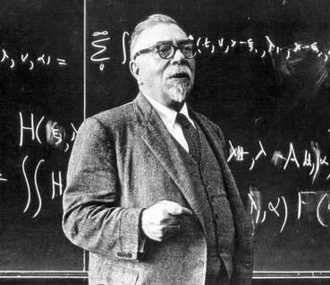

В начале 40-х годов нашего столетия сформировалась группа ученых, известных специалистов различных отраслей науки, которых объединял интерес к одной общей проблеме - проблеме управления.
Инженеры разрабатывали и создавали электронную аппаратуру для выполнения расчетов параметров управления.
Математики исследовали свойства сигналов в различных системах и описывали их аналитически. Параллельно они пытались дать ответ на вопрос: как можно измерить содержание информации в сообщении и как точно выразить эту меру.
Специалисты по статистике рассматривали поток информации в живом организме как основу физиологического регулирования его функций.
Постепенно исследователи, несмотря на разделявший их языковой барьер, пришли к выводу, что их исследования привели к формированию новой области научной мысли.
Эта новая наука «об общих законах управления и связи в живых организмах и машинах» была названа кибернетикой.
Слово «кибернетика» в значении «наука о кораблевождении» применял еще Платон в поэме «Горгий».
В 1843 году оно было использовано французским физиком и математиком Андре Мари Ампером. Ампер заимствовал это слово из греческого языка, в котором «кибернус» означает - кормчий, рулевой, и применил его в работе «Очерки по философии наук» для определения «науки об управлении обществом».
Но затем этот термин не получил распространения и, по существу, на целое столетие был забыт. Вновь о нем вспомнили лишь в 1948 году в связи с изданием книги профессора Массачусетского технологического института Норберта Винера (1894-1964) «Кибернетика».
Термин «экономическая кибернетика» впервые появился в начале 60-х годов. Первоначально ее становление было связано с разработкой моделей экономических систем и явлений, использованием электронной вычислительной техники для исследования этих моделей и для решения задач управления. Математические модели экономических систем и явлений позволили лучше осмыслить динамику изучаемых систем, выработать действенные рекомендации по рационализации их структуры и методов экономического прогнозирования и управления.
Таким образом,Экономическая кибернетика — одно из научных направлений кибернетики, занимается приложением идей и методов кибернетики к экономическим системам. В расширенном смысле под экономической кибернетикой понимают область науки, возникшую на стыке математики и кибернетики с экономикой, включая математическое программирование, исследование операций, экономико-математические модели, эконометрику и математическую экономику.
Экономическая кибернетика рассматривает экономику, а также её структурные и функциональные части как сложные системы, в которых протекают процессы регулирования и управления, реализуемые движением и преобразованием информации. Экономическая кибернетика исследует процессы управления сложными экономическими системами, используя метод экономико-математического моделирования, причем процессы управления являются по сути информационными, базирующимися на экономической информации.
В Украине специальность «экономическая кибернетика» появилась в 1965 году в трех университетах: Киевском, Львовском, Донецком. Спустя 15 лет после начала подготовки экономистов-математиков (именно так была определена квалификация специалистов) эта специальность была открыта в Днепропетровском государственном университете и Киевской аграрной академии. И хотя подготовка велась не массово, эти вузы за тридцать с лишним лет своей деятельности подготовили плеяду научно-педагогических работников для системы высшего экономического образования и научно-исследовательских организаций.
За годы жизни специальности круто изменился подход к экономике страны да и сама экономика. В условиях рыночной экономики экономисты-математики бакалаврского уровня являются теми специалистами, чьи профессиональные знания и навыки наконец-то становятся востребованными, так как специальность «экономическая кибернетика» обеспечивает подготовку бакалавров, обладающих современным экономическим мышлением, отвечающих мировым стандартам, всесторонне образованных, информированных и способных принимать эффективные решения.


Cлово «кибернетика» как название науки об управлении и информации в научный обиход ввел Норберт Винер
Основоположником экономической кибернетики является Стаффорд Бир
В июне 1970 г. в МИНХ им. Г.В. Плеханова был основан первый в России факультет экономической кибернетики